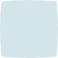

Animation Terms
keyframes
Keyframes are the main frames in an animated sequence.
In computer animation, keyframes are defined by the animator, then the animation software
(in this case, CSS animation property and @keyframes rule)
auto generates the movement of the animation.
The more keyframes defined, the more complicated the animation movement is
Below is an example of keyframes:
Inbetweens (tweening)
Inbetweens or tweenings are the auto generated frames.
When inbetween frames are generated quickly in a sequence, they create the illusion of the moving animation.
Below is an example of inbetween frames:


Animation
- Hover below to generate the animation